수질환경기사 (2007-08-05 기출문제)
1과목: 수질오염개론
1. 완전혼합형 반응조내 흐름(혼합)에 관련된 설명과 가장 거리가 먼 것은?
- 분산수(dispersion NO)는 무한대에 가까울수록 완전 혼합흐름상태라 할 수 있다.
- MOrrill지수의 값이 1에 가까울수록 이상적인 완전혼합 흐름상태에 가깝다.
- 분산(Variance)이 1 일 때 완전혼합흐름상태라 할 수 있다.
- 반응조내의 유체는 즉시 완전히 혼합된다고 가정한다.
(정답률: 79%)

2. 어떤 저수지의 용량이 3.3×106m3이고 일시적인 이유로 염분농도가 1.5%가 되었다. 저수지에 유입되는 물의 량이 년간 6.2×107m3이라면 염분농도가 100ppm으로 될 때 까지의 소요시간은? (단, 일차반응(자연대수)기준, 저수지는 완전 혼합되며 저수지로 유입되는 물의 염분농도는 0, 단순희석만 고려함)
- 2.5개월
- 3.2개월
- 4.8개월
- 6.2개월
(정답률: 알수없음)
3. 공장폐수에 무기응집제를 넣어 반응시킬 때 콜로이드의 안정도는 Zeta전위에 따라 결정되는데 다음 중 Zeta전위를 나타낸 식으로 가장 적절한 것은? (단, δ=전하가 영향을 미치는 전단표면 주위의 층의 두께, q=단위면적당 전하 D=매개체의 도전상수)
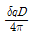
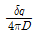
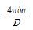
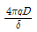
(정답률: 알수없음)
4. BOD5가 275mg/ℓ 이고, COD가 455mg/ℓ인 경우에 NBDCOD(mg/ℓ)는? (단, 탄산소계수 K1(밑이 10)=0.15/day)
- 81
- 101
- 121
- 141
(정답률: 82%)
5. 생분뇨의 BOD: 19500ppm, 염소이온 농도: 4500ppm 이며, 정화조 방류수의 염소이온 농도는 225ppm 이었다면 방류수의 BOD농도가 60ppm 일 때 정화조의 BOD제거효율은? (단, 희석 적용, 염소는 분해되지 않음)
- 약 83%
- 약 86%
- 약 91%
- 약 94%
(정답률: 47%)
6. 조류(algae)의 경험적 분자식으로 가장 알맞은 것은?
- C5H7O2N
- C5H8O2N
- C6H12O5N
- C6H14O6N
(정답률: 알수없음)
7. 해수의 특성으로 틀린 것은?
- 해수의 밀도는 수온, 염분, 수압에 영향을 받는다.
- 염분은 남, 북극해역에서 높고 적도해역에서 낮다.
- 해수내 전체질소 중 35%정도는 암모니아성 질소 유기질소 형태이다.
- 해수는 강전해질로서 1L 당 35g의 염분을 함유한다.
(정답률: 67%)
8. 다음과 같은 특징을 나타내는 모델링 종류로 가장 알맞은 것은?
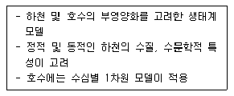
- WQRRS
- Do-Sag
- QUAL
- UNCAN
(정답률: 67%)
9. ?루코스(C6H12O6) 135g을 35℃ 혐기성 소화조에서 완전 분해시킬 때 얼마의 메탄가스가 발생 가능한가? (단, 메탄가스는 1기압, 35℃로 발생 된다고 가정함)
- 약 49L
- 약 57L
- 약 68L
- 약 76L
(정답률: 알수없음)
10. 하천의 자정계수(f)에 간한 설명으로 맞는 것은? (단, 기타 조건은 같다고 가정함)
- 수온이 상승할수록 자정계수는 작아진다.
- 수온이 상승할수록 자정계수는 커진다.
- 수온이 상승하여도 자정계수는 변화가 없이 일정하다.
- 수온이 20℃인 경우, 자정계수는 가장 크며 그 이상의 수온에서는 점차로 낮아진다.
(정답률: 64%)
11. 호수의 수질 특성 중 전기전도도에 대한 설명으로 틀린 것은?
- 물이 함유하고 있는 이온 용해염의 농도를 종합적으로 표시하는 지표이다.
- 호수내 수계의 구분이나 성층구조현상, 수질의 연속적 변화 양상 등을 쉽게 파악할 수 있는 지표이다.
- 일반적으로 수온 1℃상승에 대하여 전도율은 2% 정도 증가한다.
- 전하를 갖지 않는 물질도 수온에 따라 전기전도도에 큰 영향을 미친다.
(정답률: 20%)
12. 반각기가 2일인 방사성 폐수의 농도가 100mg/L라면 감소 속도상수는? (단, 1차반응으로 가정한다.)
- 0.347 day-1
- 0.442 day-1
- 0.545 day-1
- 0.623 day-1
(정답률: 알수없음)
13. Ca(OH)2 400mg/L 용액의 pH는? (단, Ca(OH)2는 완전 해리하는 것으로 한다. Ca의 원자량=40)
- 11.43
- 11.73
- 12.03
- 12.33
(정답률: 34%)
14. 지구상의 담수 존재량의 가장 많은 부분을 차지하고 있는 것은?
- 지하수
- 토양수분
- 빙하
- 하천수
(정답률: 30%)
15. 수은주 높이 300mm는 수주로 몇 mm 인가?
- 약 5320
- 약 4080
- 약 3540
- 약 2580
(정답률: 알수없음)
16. 질산화 박테리아에 관한 설명으로 틀린 것은?
- 절대 호기성으로 높은 산소농도를 요구한다.
- Nitrobacter는 암모니움이온의 존재하에서 pH 9.5이상이면 생장이 억제된다.
- Nitrosomonas는 산성 상태에서는 활성이 커 pH 4.5가지도 생장이 활발하게 진행된다.
- 질산화 반응의 최적온도는 30℃ 정도이다.
(정답률: 알수없음)
17. 어떤 시료수의 알칼리도가 350 mg/ℓ as CaCO3, 총경도가 240 mg/ℓ as CaCO3 였다. 이 물의 탄산 경도는?
- 110 mg/ℓ as CaCO3
- 240 mg/ℓ as CaCO3
- 350 mg/ℓ as CaCO3
- 590 mg/ℓ as CaCO3
(정답률: 알수없음)
18. 다음은 오수 및 분뇨처리시설에서 미생물의 세포증식과 관련한 Monod 형태의 식을 나타낸 것이다. 잘못 설명된 것은?
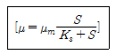
- μ는 비성장률로 단위는 시간-1 이다.
- μm는 최대 비성장률로 단위는 시간-1 이다.
- S는 기질의 감소률(상수)로 단위는 무차원이다.
- Ks는 반속도 상수로 최대성장률이 1/2일 때의 기질의 농도이다.
(정답률: 62%)
19. 생체내에 필수적인 금속으로 결핍시에는 인슐린의 저하로 인한 것과 같은 탄수화물의 대사장해를 일으키는 유해물질로 가장 적절한 것은?
- 카드뮴
- 망간
- 시안
- 크롬
(정답률: 46%)
20. 탈산소계수(K1)가 0.20 day-1인 하천의 BOD5 농도가 100mg/L이었다. BOD은? (단, 밀수는 10이다.)(오류 신고가 접수된 문제입니다. 반드시 정답과 해설을 확인하시기 바랍니다.)
- 29mg/L
- 34mg/L
- 41mg/L
- 52mg/L
(정답률: 9%)
2과목: 상하수도계획
21. 하수도계획 수립시 포함되어야 하는 사항과 가장 거리가 먼 것은?
- 침수방지계획
- 슬러지 처리 및 자원화 계획
- 물관리 및 재이용계획
- 하수도 구축지역 계획
(정답률: 39%)
22. 직경 100cm 원형관로에 물이 1/2 차서 흐를 경우, 이 관로의 경심은?
- 15cm
- 25cm
- 50cm
- 100cm
(정답률: 28%)
23. 호기성 소화조에 관한 설명으로 틀린 것은?
- 형상이 원형인 경우 바닥의 기울기는 10~25% 정도 되게 한다.
- 측심은 5m 정도로 한다.
- 수밀성 구조로 한다.
- 0.3~0.6m의 여유고를 두어야 한다.
(정답률: 60%)
24. 다음은 상수취수를 위한 저수시설 계획기준년에 관한 내용이다. ( )안에 알맞은 것은?
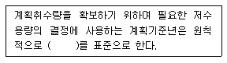
- 7개년에 제1위 정도의 갈수
- 10개년에 제1위 정도의 갈수
- 7개년에 제1위 정도의 홍수
- 10개년에 제1위 정도의 홍수
(정답률: 25%)
25. 캐비테이션(공동현상)의 방지대책에 관한 셜명으로 틀린 것은?
- 펌프의 설치위치를 가능한 한 낮추어 가용유효흡힙 수두를 크게 한다.
- 흡입관의 손실을 가능한 한 작게 하여 가용유효흡힙 수두를 크게 한다.
- 펌프의 회전속도를 낮게 선정하여 필요유효흡입수두를 크게 한다.
- 흡입측 밸브를 완전히 개방하고 펌프를 운전한다.
(정답률: 50%)
26. 폭 4m, 높이3m인 개수로의 수심이 2m이고 동수경사가 10‰일 경우 물의 유속은? (단, Manning 공식 적용, 조도계수: 0.014)
- 0.89 m/sec
- 3.57 m/sec
- 7.14 m/sec
- 14.28 m/sec
(정답률: 알수없음)
27. 하수처리 시설 중 이차침전지에 관한 설명으로 알맞지 않은 것은?
- 표면부하율은 표준활성슬러지법의 경우, 계획1일 최대 오수량에 대하여 20~30m3/m2ㆍd로 한다.
- 고형물 부하율은 25~40kg/m2ㆍd로 한다.
- 유효수심은 2.5~4m를 표준으로 한다.
- 침전시간은 계획1일 최대오수량에 따라 정하며 일반적으로 3~5시간으로 한다.
(정답률: 18%)
28. 펌프의 규정 토출량 24m3/min, 펌프의 규정 양정 400cm, 펌프의 규정 회전수 4000rpm인 펌프의 비교회전도는? (단, 양흡입의 경우가 아님)
- 1732
- 1821
- 1934
- 2076
(정답률: 0%)
29. 펌프의 토출량은 200m3/min이며 흡입구의 유속이 10m/sec인 경우에 펌프의 흡입구경(mm)은?
- 463
- 523
- 653
- 713
(정답률: 39%)
30. 배수지에 관한 설명으로 부적합한 것은?
- 배수지는 정수장에서 송수를 받아 해당 배수구역의 수요량에 따라 배수하기 위한 저류지이다.
- 배수지는 부득이한 경우 외에는 급수지역의 중앙 가까이 설치한다.
- 자연유하식 배수지의 표고는 최대동수압이 확보되는 높이여야 한다.
- 배수지의 유효수심은 3~6m 정도를 표준으로 한다.
(정답률: 알수없음)
31. 하수관서시설인 우수관거 및 합류관거에서 유속번위기준으로 맞는 것은?
- 계획우수량에 대하여 유속을 최고 0.3m/sec, 최대 3.0m/sec 로 한다.
- 계획우수량에 대하여 유속을 최고 0.6m/sec, 최대 5.0m/sec 로 한다.
- 계획우수량에 대하여 유속을 최고 0.8m/sec, 최대 3.0m/sec 로 한다.
- 계획우수량에 대하여 유속을 최고 1.2m/sec, 최대 5.0m/sec 로 한다.
(정답률: 알수없음)
32. 하수관거시설인 우수토실의 우수월류위어의 위어길이 ( )을 계산하는 식으로 맞는 것은? (단 ,L(m): 위어길이, Q(m3/s):우수월류량, H(m):월류수심(위어길이간의 평균값))
- L=[Q/(1.2H1/2)]
- L=[Q/(1.8H1/2)]
- L=[Q/(1.2H3/2)]
- L=[Q/(1.8H3/2)]
(정답률: 알수없음)
33. 정수시설 중 응집지 시설인 플록형성지에 관한 설명으로 틀린 것은?
- 플록형성시간은 계획정수량에 대하여 20~40분간을 표준으로 한다.
- 플록형성지는 직사각형이 표준이다.
- 야간근무자가 플록형성상태를 감시할 수 있는 적절한 조명장치를 설치한다.
- 플록형성지는 약품주입조 후미에 위치하며 침전지와 분리하여 사용한다.
(정답률: 64%)
34. 계획우수량을 정할 때 고려하여야 할 사항에 관한 내용 중 틀린 것은?
- 확률년수는 원칙적으로 5~10년 으로 한다.
- 유입시간은 최소단위배수구의 지표면특성을 고려하여 구한다.
- 유출계수는 지형도를 기초로 답사를 통하여 출분히 조사하고 장래개발계획을 고려하여 구한다.
- 유하시산은 최상류관거의 끝으로부터 하류관거의 어떤지점까지의 거리를 계획유량ㅇ 대응항 유속으로 나누어 구하는 것을 원칙으로 한다.
(정답률: 32%)
35. 하수도시설기준상 사류펌프의 비교회전도(Ns)로 적절한 것은?
- 100~250
- 700~1200
- 1500~2100
- 2500~3500
(정답률: 알수없음)
36. 지하수 취수시 ‘적정양수량’의 정의로 맞는 것은?
- 한계양수량의 50% 이하의 양수량
- 한계양수량의 60% 이하의 양수량
- 한계양수량의 70% 이하의 양수량
- 한계양수량의 80% 이하의 양수량
(정답률: 알수없음)
37. 정수시설인 막여과시설에서 막모듈의 파울링에 해당되는 내용은?
- 막모듈의 공급유로 또는 여과수 유로가 고형물로 폐색되어 흐르지 않는 상태
- 미생물과 막 재질의 자화 또는 분비물의 작용에 의한 변화
- 건조되거나 수축으로 인한 막 구조의 비가역적인 변화
- 원수 중의 고형물이나 진동에 의한 막 면의 상처나 마모, 파단
(정답률: 알수없음)
38. 하수관거의 단면형상이 계란형인 경우에 관한 설명으로 틀린 것은?
- 유량이 큰 경우 원형거에 비해 수리학적으로 유리하다.
- 원형거에 비해 관폭이 작아도 되므로 수직방향의 토압에 유리한다.
- 재질에 따라 제조비가 늘어나는 경우가 있다.
- 수직방향의 시공에 정확도가 요구되므로 면밀한 시공이 필요하다.
(정답률: 46%)
39. 표준활성슬러지법 HRT(수리학적 체류시간)의 표준은?
- 2~4시간
- 4~6시간
- 6~8시간
- 8~10시간
(정답률: 30%)
40. 상수의 소독(살균)설비중 저장설비에 관한 내용이다. ( )안에 알맞은 내용은?
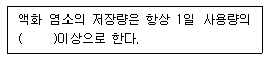
- 3일분
- 5일분
- 7일분
- 10일분
(정답률: 46%)
3과목: 수질오염방지기술
41. 다음의 하수내 인제거 처리공정 중 처리공정으로 유입되는 인의 제거율(%)이 가장 높은 것은?
- 역삼투
- 여과
- RBC
- 탄소흡착
(정답률: 알수없음)
42. 다음에 설명한 분리방법으로 가장 적절한 것은?
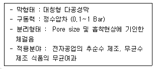
- 정밀여과
- 한외여과
- 역삼투
- 투석
(정답률: 64%)
43. 다음 조건하에서의 폭기조 용적은?
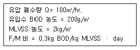
- 120m3
- 133m3
- 400m3
- 800m3
(정답률: 알수없음)
44. 역삼투 장치로 하루에 500m3의 3차 처리된 유출수를 탈염 시키고자 한다. 요구되는 막면적(m2)은?
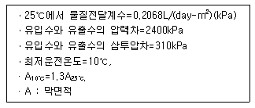
- 약 1230
- 약 1430
- 약 1630
- 약 1830
(정답률: 알수없음)
45. NO3가 박테리아에 의하여 N2로 환원되는 경우 폐수의 pH는?
- 증가한다.
- 감소한다.
- 변화없다.
- 감소하다가 증가한다.
(정답률: 46%)
46. 유량 1000m3/d 인 폐수를 탈질화하고자 한다. 다음 조건에서 탈질화에 사용되는 anoxic 반응조의 부피는? (단, 내부반송등 기타 조건은 고려하지 않음)
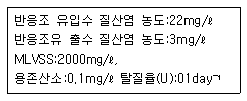
- 95m3
- 145m3
- 225m3
- 315m3
(정답률: 30%)
47. 지름이 균등하게 0.1mm 일 때, 비중이 0.4인 기름방울은 비중이 0.9인 기름방울보다 수중에서의 부상속도가 얼마나 더 클 것인가? (단, 물의 비중은 , 기타 조건은 같다고 함)
- 6배
- 5배
- 4배
- 3배
(정답률: 알수없음)
48. 유량이 500m3/day, SS 농도가 220 mg/L인 하수가 체류시간이 2시간인 최초침전지에서 60%의 제거효율을 보였다. 이 때 발생되는 슬러지 양은? (단, 슬러지 비중은 1.0, 함수율은 94%, SS만 고려함)
- 약 0.5 m3/day
- 약 0.8 m3/day
- 약 1.1 m3/day
- 약 1.4 m3/day
(정답률: 46%)
49. 유량이 5000약m3/day 이며 BOD가 200mg/ℓ인 폐수를 폭기조 MLSS 2000mg/ℓ. 1일 폐기 슬러지 400kg/day, 유출수의 SS농도가 20mg/ℓ, 폭기조 체류시간 6시간으로 운전시킬 때 슬러지 일령(SRT)은? (단, 반송슬러지 SS농도는 4%라 가정함)
- 5일
- 6일
- 7일
- 8일
(정답률: 알수없음)
50. 하수 고도처리 공법인 Phostrip공정에 관한 설명으로 틀린 것은?
- 기존 활성슬러지 처리장에 쉽게 적용 가능하다.
- 인제거시 BOD/P비에 의하여 조절된다.
- 치종 침전지에서 인용출 방지를 위하여 MLSS 내 DO를 높게 유지해야 한다.
- Mainstream 화학침전에 비하여 약품사용량이 적다.
(정답률: 알수없음)
51. 하수소독시 적욛되는 UV 소독방법에 관한 설명으로 틀린 것은? (단, 오존 및 염소소독 방법과 비교)
- 접촉시간이 짧다.(1~5초)
- 물에 탁도가 높아도 소독 능력에 영향이 없다.
- pH변화에 관계 없이 지속적인 살균이 가능하다.
- 유량과 수질의 변동에 대해 적응력이 강하다.
(정답률: 알수없음)
52. 하수소독시 사용되는 이산화염소(ClO2)와 염소(Cl2)에 관한 내용으로 틀린 것은?
- 바이러스 사멸: ClO2-좋음, Cl2-나쁨
- 유해부산물: ClO2-없음, Cl2-있음
- 잔류성: ClO2-없음, Cl2-있음
- pH영향: ClO2-없음, Cl2-있음
(정답률: 알수없음)
53. 포기조내 혼합액 1L를 30분간 정치했을 때 슬러지 용량이 300mL이다. 유입수중의 슬러지와 포기조에서 생성슬러지를 무시한다면 슬러지 반송율은 몇 % 인가? (단, 1L 메스실린더 사용 기준)
- 27%
- 36%
- 43%
- 52%
(정답률: 알수없음)
54. 혐기성 소화시 소화가스 발생량 저하의 원인과 가장 거리가 먼 것은?
- 저농도 슬러지 유입
- 소화슬러지 과잉배출
- 소화가스 누적
- 조내 온도저하
(정답률: 알수없음)
55. 하수내 함유된 유기물질뿐 아니라 영양물질까지 제거 하기 위하여 개발된 A2/O공법에 관한 설명으로 틀린 것은?
- 인과 질소를 동시에 제거할 수 있다.
- 혐기조에서는 인의 바울이 일어난다.
- 폐 sludge내의 인함량은 비교적 높아서(3~5%) 비료의 가치가 있다.
- 무산소조에서는 인의 과잉섭취가 일어난다.
(정답률: 70%)
56. 설계기준치보다 낮은 BOD 농도의 폐수가 유입되는 활성슬러지공법에서 흔히 일어날 수 있는 현상은?
- 활성슬러지 플록이 잘 형성된다.
- 활성슬러지에서 사상성미생물이 자란다.
- 포기조 DO가 감소한다.
- 포기조 MLSS 농도가 증가한다.
(정답률: 0%)
57. 1차 처리결과 생성되는 슬러지를 분석한 결과 함수율이 90%, 고형물중 무기성 고형물질이 30%, 유기성 고형물질이 70%, 유기성 고형물질의 비중 1.1, 무기성 고형물질의 비중이 2.2로 판정되었다. 이 때 슬러지의 비중은?
- 0.977
- 1.014
- 1.018
- 1.023
(정답률: 알수없음)
58. 하수를 여과지에서 여과시 발생 되는 문제점 중 점토구(mudball)형성에 관한 설명으로 틀린 것은?
- 강산화제 또는 고분자 응집제의 주입으로 제거된다.
- 여과과정과 역세척 운전의 효율을 감소시킨다.
- 점토구는 생물학적 floc, 먼지, 여재의 응집체이다.
- 점토구를 제거하지 않으면 큰 덩어리로 커져 여과상에 침전하게 된다.
(정답률: 37%)
59. 하수처리를 위한 생물막을 이용한 접촉산화법의 특징으로 틀린 것은?
- 반송슬러지가 필요하지 않으므로 운전관리가 용이하다.
- 생물상이 다양하여 처효과가 안정적이다.
- 분해속도가 낮은 기질제거에 효과적이며 수온의 변동에 강하다.
- 접촉재가 조 내에 있기 때문에 부착생물량의 확인이 용이하다.
(정답률: 20%)
60. 부상조의 최적 A/S비는 0.04, 처리할 폐수의 부유물질 농도는 500mg/L, 20℃에서 414kPa로 가압할 때 반송율(%)은? (단, f=0.8, Sa=18.7㎖/ℓ, 순환방식, 1기압=101.35kPa)
- 약 18
- 약 21
- 약 24
- 약 27
(정답률: 알수없음)
4과목: 수질오염공정시험기준
61. 산화성물질이 함유된 시료나 착색된 시료에 적합하며 특히 윙클러-아지드화나트륨 변법에 사용할 수 없는 폐하수의 용존산소 측정에 유용하게 사용할 수 있는 측정법은?
- 이온크로마토그래피법
- 이온전극법
- 알칼리비색법
- 격막전극법
(정답률: 알수없음)
62. 4각 위어에 의하여 유량을 측정하려고 한다. 위어의 수두 0.5m, 절단의 폭이 4m이면 유량(m3/분)은? (단, 유량계수는 2.4이다.)
- 약 2.1
- 약 2.4
- 약 3.1
- 약 3.4
(정답률: 알수없음)
63. 다음은 질산성질소 측정시 적용되는 흡광광도법인 부루신법에 관한 것이다. 시험방법이 맞는 것은?
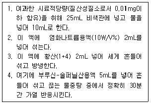
- 1
- 2
- 3
- 4
(정답률: 알수없음)
64. 시료의 권장보존기간이 다른 측정항목은?
- 암모니아성질소
- 총질소
- 용존총질소
- 아질산성질소
(정답률: 알수없음)
65. 수질오염공정시험방법에 적용되는 총칙 규정으로 틀린 것은?
- 정량범위라 함은 본 시험방법에 따라 시험할 경우 유효측정농도범위 10% 이하에서 측정할 수 있는 정량하한과 정량상한의 범위를 말한다.
- 표준편차율은 표준편차를 평균값으로 나눈 값의 백분율로서 반복조작시의 편차를 상대적으로 표시한 것을 말한다.
- 유효측정농도는 지정된 시험방법에 따라 시험하였을 경우 그 시험방법에 대한 최소정량한계를 의미한다.
- 하나 이상의 시험방법으로 시험한 결과가 서로 달라 제반 기준의 적부 판정에 영향을 중 경우에는 항목별 시험방법 중 주 시험방법에 의한 분석 성적에 의하여 판정한다.
(정답률: 알수없음)
66. 시료 채취시 유의사항으로 틀린 것은?
- 채취용기는 시료를 채우기 전에 시료로 3회 이상 씻은 다음 사용한다.
- 시료 채취 용기에 시료를 채울 때에는 어떠한 경우에도 시료의 교란이 일어나서는 안된다.
- 지하수 시료는 취수정 내에 고여 있는 물과 원래 지하수의 성상이 달라질 수 있으므로 고여있는 물을 충분히 퍼낸 다음 새로 나온 물을 채취한다.
- 시료 채취량은 시험항목 및 시험 횟수의 필요량의 3~5배 채취를 원칙으로 한다.
(정답률: 알수없음)
67. 원자흡광광도장치의 광원램프의 점등장치로서 구비하여야 하는 조건과 거리가 먼 것은?
- 램프의 수에 따라 필요한 만큼의 예비점등 회로를 갖는 것이어야 한다.
- 전원회로는 전류 또는 전압이 일정한 것이어야 한다.
- 램프의 전류값을 정밀하게 조정할 수 있는 것이어야 한다.
- 고주파 방전에 의한 램프의 출력 변화가 적어야 한다.
(정답률: 알수없음)
68. 다음은 니켈의 흡광광도법에 관한 설명이다. 맞는 것은?
- 니켈이온은 암모니아 약 알칼리성에서 디메틸글리옥심과 반응하여 니켈착염을 생성한다.
- 니켈이온은 황산 산성에서 디메틸글리옥심과 반응하여 니켈착염을 생성한다.
- 니켈이온은 암모니아 약 알칼리성에서 염산히드록실아민과 반응하여 니켈착염을 생성한다.
- 니켈이온은 황산 산성에서 염산히드록실아민과 반응하여 니켈착염을 생성한다.
(정답률: 알수없음)
69. ??시험방법상 총대장균군의 시험방법이 아닌 것은?
- 균군계수 시험방법
- 막여과 시험방법
- 최적확수 시험법
- 평판 집락 시험방법
(정답률: 40%)
70. 흡광광도법에 대한 설명 중 틀린 것은?
- 자외부의 광원으로는 주로 중수소 방전관을 사용한다.
- 광전광도계는 파장선택부에 거름종이를 사용한 장치이다.
- 흡수셀의 재질로 유리제는 주로 가시 및 근적외부, 석영제는 자외부, 플라스틱제는 근적외부 파장범위를 측정할 때 사용한다.
- 입사광의 강도(Io)와 투사광의 강도(It)에는 Lamber t-Beer의 법칙이 성립되며
 를 투과도라 한다.
를 투과도라 한다.
(정답률: 알수없음)
71. 다음 중 반드시 유리시료용기를 사용하여야만 하는 측정 항목은?
- 염소이온
- 총인
- 시안
- 유기인
(정답률: 알수없음)
72. 전기전도도 측정에 관한 내용 중 틀린 것은?
- 동일 측정계를 사용할 경우라도 셀의 규격이 모두 다르므로 두 전극간 단면적, 거리를 고려해야 한다.
- 전도체저항(Ω)은
 로 나타낼 수 있다.
로 나타낼 수 있다. - 전기전도도는 용액이 전류를 운반할 수 있는 정도를 말한다.
- 전기전도도는 온도차의 영향이 커 온도 환산이 필요하다.
(정답률: 알수없음)
73. 노말헥산 추출물질 시험법에서 노말헥산 추출을 위한 시료의 pH 기준은?
- pH 2 이하
- pH 4 이하
- pH 8 이하
- pH 10 이하
(정답률: 30%)
74. 다음은 0.025N 황산제일철암모늄액 조제시 표정에 관한 내용이다. ( )안에 알맞은 내용은?
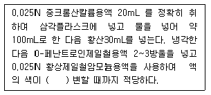
- 적갈색에서 청록색으로
- 청록색에서 적갈색으로
- 적갈색에서 등적색으로
- 등적색에서 적갈색으로
(정답률: 31%)
75. 유도결합 플라스마 발광분석장치의 측정시 플라스마 발광부 관측 높이는 유도 코일 상단으로부터 얼마의 범위에서 측정하는 것이 보통인가? (단, 알칼리 원소는 제외)
- 15~18mm
- 35~38mm
- 55~58mm
- 75~78mm
(정답률: 알수없음)
76. 어떤 공장에서 시료 채취한 폐수의 SS를 측정하여 다음과 같은 결과를 얻었다. SS농도는 몇 mg/ℓ 인가? (단, 시료량:80㎖, 유리섬유 여지무게: 12.254g, 여과건조후 유리섬유 여지무게: 12.262g)
- 80mg/ℓ
- 100mg/ℓ
- 120mg/ℓ
- 180mg/ℓ
(정답률: 알수없음)
77. 다음은 가스크로마토 그래피법의 전자포획형 검출기에 관한 설명이다. ( )안에 알맞은 내용은?
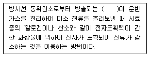
- α(알파)선
- β(베타)선
- γ(감마)선
- 중성자선
(정답률: 알수없음)
78. 흡광광도법으로 불소시험 중 탈색현상이 나타났다. 그 이유로 가장 적절한 것은?
- 황산이 분해되어 유출되었기 때문에
- 염소이온이 다량 함유되어 있어서
- 교반속도가 일정하지 않았기 때문에
- 시료중 불소함량이 정량점위를 초과하였기 때문에
(정답률: 25%)
79. 가스크로마토그래피법으로 유기인화합물을 정량할 때 다음 사항 중 틀린 것은?
- 운반가스:아르곤
- 검출기:불곷광도형 검출기
- 농축장치:구데르나다니쉬형 농축기
- 유효측정농도:0.00⑤ mg/ℓ 이상
(정답률: 알수없음)
80. 흡광광도법(메틸렌블루우법)에 의하여 음이온 계면활성제를 측정할 때 흡광광도계의 측정파장은?
- 500nm
- 550nm
- 600nm
- 650nm
(정답률: 30%)
5과목: 수질환경관계법규
81. 기술요원 또는 환겨이술인의 교육기관으로 알맞게 짝지어진 것은?
- 국립환경과학원-환경보전협회
- 환경관리협회-환경공무원교육원
- 환경공무원교육원-환경보전협회
- 환경관리협회-국립환경과학원
(정답률: 알수없음)
82. 다음은 초과배출부과금 산정시 적용되는 위반횟수별 부과계?에 관한 내용이다. ( )안에 알맞은 내용은?
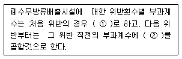
- ①2.4, ②1.9
- ①2.1, ②1.7
- ①1.8, ②1.5
- ①1.5, ②1.3
(정답률: 30%)
83. 사업장별 환경기술인의 자격기준에 관한 설명으로 알맞지 않은 것은?
- 방지시설 설치면제대상 사업장과 배출시설에서 배출되는 오염물질 등을 공동방지시설에서 처리하게 하는 사업장은 4,5종 사업장에 해당하는 환경기술인을 두어야 한다.
- 연간 90일 미만 조업하는 1,2,3종 사업장은 4,5종 사업장에 해당하는 환경기술인을 선임할 수 있다.
- 공동방지시설에 있어서 폐수배출량이 4종 및 5종 사업장의 규모에 해당하는 경우에는 3종 사업장에 해당하는 환경기술인을 두어야 한다.
- 1종 또는 2종사업장 중 1월간 실제 작업한 날만을 계산하여 1일 평균 17시간 이상 작업하는 경우에 그 사업장은 환경기술인을 각 2일 이상을 두어야 한다. 이 경우 각각 1인을 제외한 나머지 인원은 3종 사업장에 해당하는 환경기술인으로 대체할 수 있다.
(정답률: 알수없음)
84. 초과부과금의 부과대상물질이 아닌 것은?
- 구리 및 그 화합물
- 페놀류
- 테트라클로로에틸렌
- 사염화탄소
(정답률: 알수없음)
85. 낚시제한구역에서의 환경부령으로 제한되는 행위기준으로 틀린 것은?
- 1인이 2대 이상의 낚싯대를 사용하는 행위
- 고기를 잡기 위해 면허, 허가 또는 신고를 하지 않고 어망을 이용하는 행위
- 낚시바늘에 끼워서 사용하지 아니하고 고기를 유인하기 이하여 떡밥, 어분 등을 던지는 행위
- 1개의 낚싯대에 5대 이상의 낚시바늘을 떡밥과 뭉쳐서 미끼로 던지는 행위
(정답률: 알수없음)
86. 다음 중 수질환경보전법상 ‘수면관리자’에 관한 정의로 올바른 것은?
- 수질환경법령의 규정에 의하여 호소를 관리하는 자를 말한다. 이 경우 동일한 호소를 관리하는 자가 2 이상 인 경우에는 상수도법에 의한 하천의 관리청의 자가 수면관리자가 된다.
- 수질환경법령의 규정에 의하여 호소를 관리하는 자를 말한다. 이 경우 동일한 호소를 관리하는 자가 2 이상 인 경우에는 상수도법에 의한 하천의 관리청외의 자가 수면관리자가 된다.
- 다른 법령의 규정에 의하여 호소를 관리하는 자를 말한다. 이 경우 동일한 호소를 관리하는 자가 2 이상 인 경우에는 상수도법에 의한 하천의 관리청의 자가 수면관리자가 된다.
- 다른 법령의 규정에 의하여 호소를 관리하는 자를 말한다. 이 경우 동일한 호소를 관리하는 자가 2 이상 인 경우에는 상수도법에 의한 하천의 관리청외의 자가 수면관리자가 된다.
(정답률: 28%)
87. 다음은 단위구간별 수질보전계획에 관한 내용이다. ( )안에 알맞은 내용은?
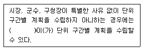
- 유역환경청장 또는 지방환경청장
- 광역시장, 도지사
- 환경부장관
- 중권역수립권자
(정답률: 20%)
88. 비점오염원 관리지역의 지정기준과 가장 거리가 먼 것은?
- 하천 및 호수의 수질에 관한 환경기준 초과 유역으로 비점오염기여율이 70퍼센트 이상인 지역
- 비점오염물질에 의하여 자연생태계에 중대한 위해가 초래되거나 초래될 것으로 예상되는 지역
- 인구 100만 이상의 도시로서 비점오염관리가 필요한 지역
- 지질, 지층구조가 특이하여 특별한 관리가 필요하다고 인정되는 지역
(정답률: 알수없음)
89. 수질 및 수생태계 환경기준 중 하천의 생활환경기준으로 등급이 ‘약간 좋음’에 해당되지 않는 기준은?
- pH:6.5~8.5
- BOD:3mg/ℓ이하
- SS:50mg/ℓ이하
- 대장균군(군수/100mL):총대장균군 1000 이하
(정답률: 38%)
90. 사업자가 폐수를 화학적 처리방법으로 처리할 때 얼마의 기간 이내에 배출시설(폐수무방류배출시설 제외)에서 배출되는 수질오염물질이 배출허용기준 이하로 처리될 수 있도록 방지시설을 운영하여야 하는가? (단, 가동개시일이 12월 3일 임)
- 가동개시일부터 30일
- 가동개시일부터 40일
- 가동개시일부터 50일
- 가동개시일부터 70일
(정답률: 40%)
91. 다음은 폐수 종말처리시설의 유지, 관리기준에 관한 내용이다. ( )안에 알맞은 내용은?
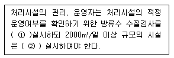
- ① 분기 1회 이상 ② 월 1회 이상
- ① 월 1회 이상 ② 월 2회 이상
- ① 월 2회 이상 ② 주 1회 이상
- ① 주 1회 이상 ② 수시
(정답률: 50%)
92. 다음의 오염물질 중 초과부과금 산정시 오염물질 1킬로그램당 부과금액이 가장 큰 것은?
- 카드뮴 및 그 화합물
- 납 및 그 화합물
- 수은 및 그 화합물
- 6가크롬 및 그 화합물
(정답률: 알수없음)
93. 다음은 사업장의 규모별 구분에 관한 내용이다. ( )안에 알맞은 내용은?
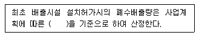
- 예상용수사용량
- 예상폐수배출량
- 예상수돗물사용량
- 예상공정수사용량
(정답률: 56%)
94. [환경기술인을 두어야 할 사업장의 범위 및 환경기술인의 자격기준은 ( )령으로 정한다.] ( )안에 알맞은 것은?
- 유역환경청장
- 환경부
- 대통령
- 시,도지사
(정답률: 50%)
95. 수질오염경보 중 조류대발생경보 단계시 취,정수장 관리자의 조치사항으로 틀린 것은?
- 조류증식 수심 이하로 취수구 이동
- 오염원의 수시 시료채취 및 분석
- 정수처리간화(활성탄 처리, 오존)
- 정수의 독소분석
(정답률: 10%)
96. 다음은 과징금처분에 관한 내용이다. ( )안에 알맞은 내용은?
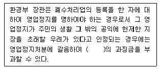
- 2억원 이하
- 3억원 이하
- 4억원 이하
- 5억원 이하
(정답률: 알수없음)
97. 수질 및 수생태계 환경기준 중 하천의 ‘사람의 건강보고 기준’으로 틀린 것은?
- 카드뮴:0.0⑤mg/L 이하
- 사염화탄소:0.⑤mg/L 이하
- 6가 크롬:0.⑤mg/L 이하
- 비소:0.0⑤mg/L 이하
(정답률: 19%)
98. 다음은 폐수처리업(폐수재이용법)의 등록기준 중 운반장비에 관한 내용이다. ( )안에 알맞은 내용은?
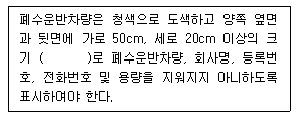
- 황색바탕에 녹색글씨
- 황색바탕에 흑색글씨
- 흰색바탕에 녹색글씨
- 흰색바탕에 흑색글씨
(정답률: 알수없음)
99. 법 규정에 의한 관계 공무원의 출입, 검사를 거부, 방해 또는 기피한 폐수무방류배출시설을 설치, 운영하는 자에 대한 벌칙기준은?
- 1년 이하의 징역 또는 1천만원 이하의 벌금
- 500만원 이하의 벌금
- 300만원 이하의 벌금
- 200만원 이하의 벌금
(정답률: 알수없음)
100. 수질오염방지시설중 물리적 처리시설에 해당하는 것은?
- 응집시설
- 침전물 개량시설
- 폭기시설
- 화학적 침강시설
(정답률: 47%)